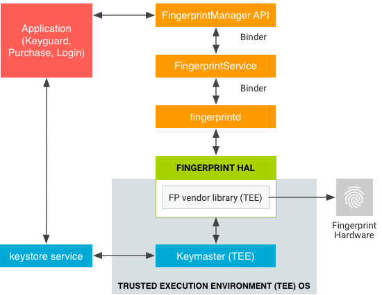

On devices with a fingerprint sensor, users can enroll one or more fingerprints and use those fingerprints to unlock the device and perform other tasks. Android uses the Fingerprint Hardware Abstraction Layer (HAL) to connect to a vendor-specific library and fingerprint hardware, e.g. a fingerprint sensor.
To implement the Fingerprint HAL, you must
implement the major functions of
/hardware/libhardware/include/hardware/fingerprint.h in a
vendor-specific library.
The fingerprint sensor of a device is generally idle. However, in response to
a call to the authenticate or enroll function, the
fingerprint sensor listens for a touch (the screen might also wake when a user
touches the fingerprint sensor). The high-level flow of fingerprint matching
includes the following steps:
fingerprintd (the Fingerprint daemon) of a fingerprint
authentication (or non-authentication).This flow assumes a fingerprint has already been enrolled on the device, i.e. the vendor-specific library has enrolled a template for the fingerprint (for details, see Authentication).
The Fingerprint HAL interacts with the following components:
FingerprintManager API. Interacts directly with an app in
an app process. Each app has an instance of FingerprintManager,
a wrapper that communicates with FingerprintService.FingerprintService. Singleton service that operates in
the system process, which handles communication with
fingerprintd.
fingerprintd. C/C++ implementation of the binder interface
from FingerprintService. The fingerprintd daemon operates in its
own process and wraps the Fingerprint HAL vendor-specific library.A vendor-specific HAL implementation must use the communication protocol required by a TEE. Thus, raw images and processed fingerprint features must not be passed in untrusted memory. All such biometric data needs to be secured within sensor hardware or trusted memory. (Memory inside the TEE is considered trusted; memory outside the TEE is considered untrusted.) Rooting must not compromise biometric data.
fingerprintd makes calls through the Fingerprint HAL to the
vendor-specific library to enroll fingerprints and perform other operations:
The following Fingerprint HAL guidelines are designed to ensure that fingerprint data is not leaked and is removed when a user is removed from a device:
set_active_group() function or provide a way to erase all user
template data when the user is removed. It is strongly recommended that
fingerprint template files be stored as encrypted in the path provided. If
this is infeasible due to TEE storage requirements, the implementer must add
hooks to ensure removal of the data when the user is removed.The Fingerprint HAL contains the following major functions in
/hardware/libhardware/include/hardware/fingerprint.h:
enroll. Switches the HAL state machine to start the
collection and storage of a fingerprint template. When enrollment is complete,
or after a timeout, the HAL state machine returns to the idle state.pre_enroll. Generates a unique token to indicate the
start of a fingerprint enrollment. Provides a token to the enroll
function to ensure there was prior authentication, e.g. using a password. To
prevent tampering, the token is wrapped (e.g. HMAC'd) after the device
credential is confirmed. The token must be checked during enrollment to verify
the token is still valid.get_authenticator_id. Returns a token associated with the
current fingerprint set.cancel. Cancels pending enroll or authenticate operations.
The HAL state machine is returned to the idle state.enumerate. Synchronous call for enumerating all known
fingerprint templates.remove. Deletes a fingerprint template.set_active_group. Restricts a HAL operation to a set of
fingerprints that belong to a specified group, identified by a group
identifier (GID).authenticate. Authenticates a fingerprint-related operation
(identified by an operation ID).set_notify. Registers a user function that receives
notifications from the HAL. If the HAL state machine is in a busy state, the
function is blocked until the HAL leaves the busy state.For details on these functions, refer to the comments in
fingerprint.h.